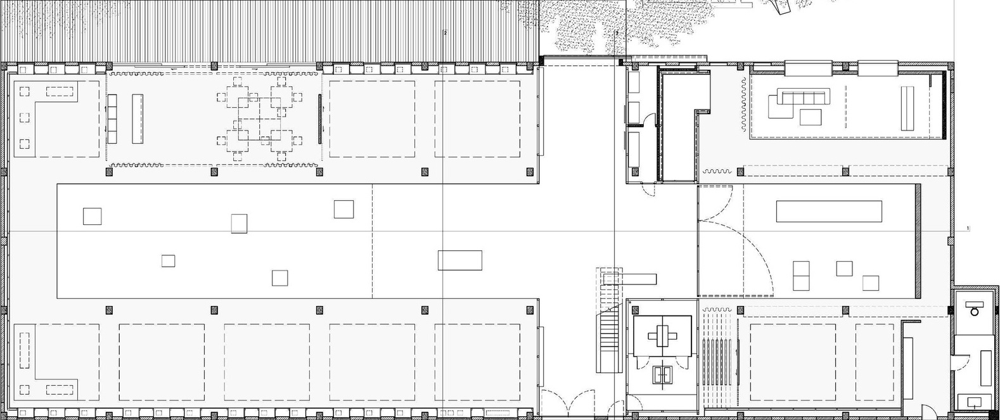

Introdução
O Problema da Galeria de Arte, que também é conhecido como Problema do Museu, é um problema clássico da área de geometria computacional, que tem a sua origem no seguinte problema do mundo real:
"Numa galeria de arte de forma poligonal, qual é o número mínimo de guardas que juntos podem observar toda a galeria de arte"?
Formalmente, considere uma área poligonal disposta como a planta de uma galeria de arte. Nesse caso, queremos minimizar o número de pontos (guardas) que são suficientes para cobrir toda a área da galeria de arte. Nesse sentido, os guardas não são móveis e têm um campo visual de 360 graus, de modo que vamos considerá-los como câmeras de vigilância.
Triangulação de Polígonos
A triangulação de polígonos é uma técnica usada para dividir um polígono em triângulos...
3-Coloração de Polígonos
A 3-Coloração de polígonos é uma técnica usada para...